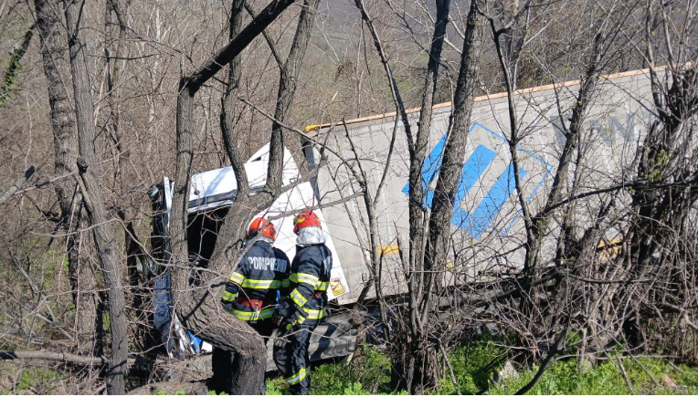

Intervenție în desfășurare pe DN 6! Secția de Pompieri Orșova intervine în aceste momente la un accident rutier produs în zona Pasajului Valea Cernei, unde un TIR s-a răsturnat în afara părții carosabile.
Forțele de intervenție au ajuns prompt la locul evenimentului, iar șoferul autotrenului este evaluat medical de către echipajul SMURD. Potrivit primelor informații, autovehiculul a ieșit de pe carosabil și s-a răsturnat, blocând parțial traficul în zonă.
Intervenție rapidă a pompierilor din Orșova

Echipajele de pompieri din cadrul Secției de Pompieri Orșova au răspuns prompt apelului de urgență și s-au deplasat la fața locului. Operațiunile de descarcerare și securizare a zonei au demarat imediat după sosirea forțelor de intervenție.
Șoferul TIR-ului, singurul ocupant al autovehiculului, a fost scos din cabina avariată și este în prezent evaluat de echipa medicală SMURD. Starea sa de sănătate urmează a fi comunicată după finalizarea evaluării medicale.
DN 6 — o rută cu risc ridicat de accidente
DN 6, care traversează zona montană a județului Mehedinți, este cunoscut pentru traseele dificile și periculoase, în special în zona Pasajului Valea Cernei. Curbele strânse, diferența de nivel și condițiile meteorologice variabile fac din acest sector unul dintre cele mai solicitante pentru șoferii de autovehicule grele.
Autoritățile recomandă șoferilor care circulă pe DN 6 să adapteze viteza la condițiile de drum, să respecte limitele de viteză și să fie pregătiți pentru situații neprevăzute, mai ales în cazul autovehiculelor cu tonaj mare.
- Reduceți viteza în zona Pasajului Valea Cernei
- Mențineți distanța de siguranță față de autovehiculele grele
- Ocoliți zona accidentului și urmați indicațiile autorităților
- În caz de urgență, sunați la 112
Situația este în continuare monitorizată de echipajele de intervenție. MehedintiAzi.ro revine cu detalii despre starea șoferului și despre evoluția situației traficului pe DN 6 în zona afectată.
Sursa: ISU Mehedinți / Redactia MehedintiAzi.ro